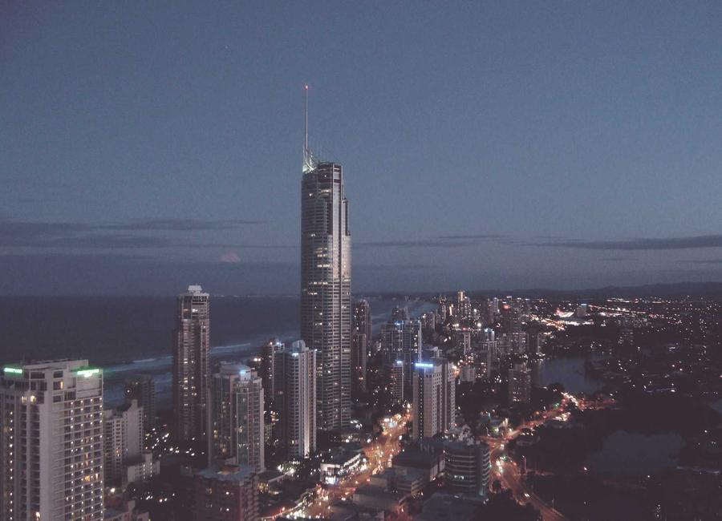

01
Separate the layers
Keep the background, foreground and content independent so their movement stays easy to control.
HTML + CSS experiment
A focused parallax demo showing how perspective, layered imagery and a little JavaScript can turn a simple page into a more immersive interface.
Explore the patternsThe idea
Parallax works best when the structure stays clear. Each layer has one job: establish context, guide attention or add a sense of space.
Keep the background, foreground and content independent so their movement stays easy to control.

Small depth changes can create a strong result without making the page difficult to read or use.
Motion should support the story of the page and give visitors a natural reason to continue.
Built for learning
Responsive layout adapts from wide screens to compact devices.
Local images keep the presentation reliable after deployment.
Accessible controls make the navigation and scroll experience easier to use.